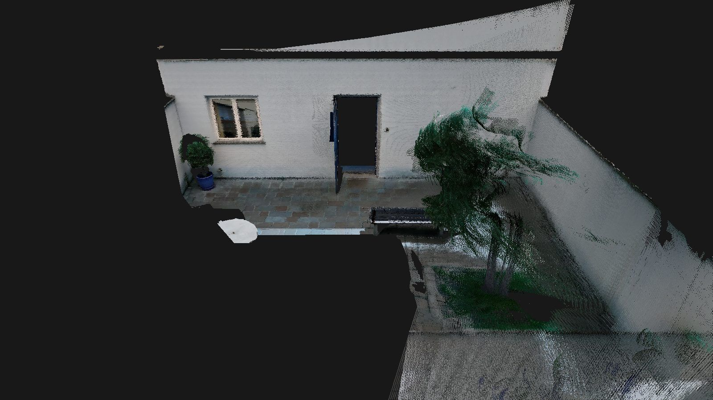
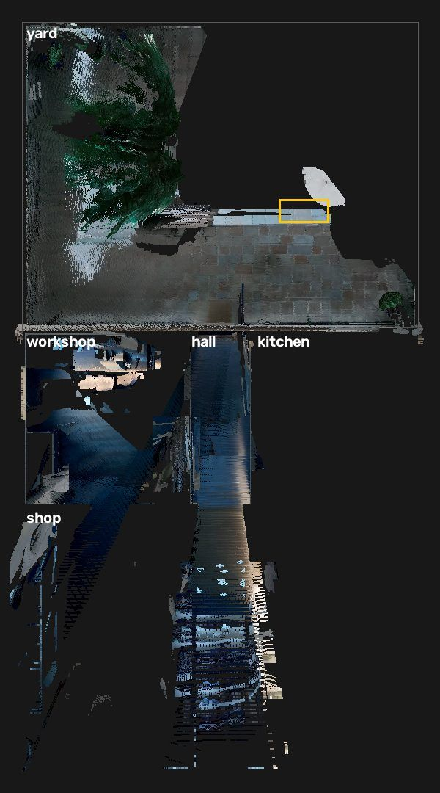
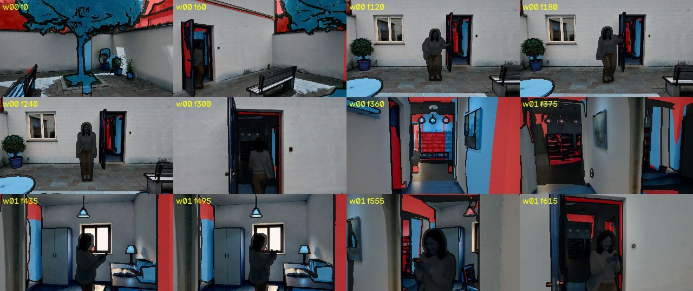
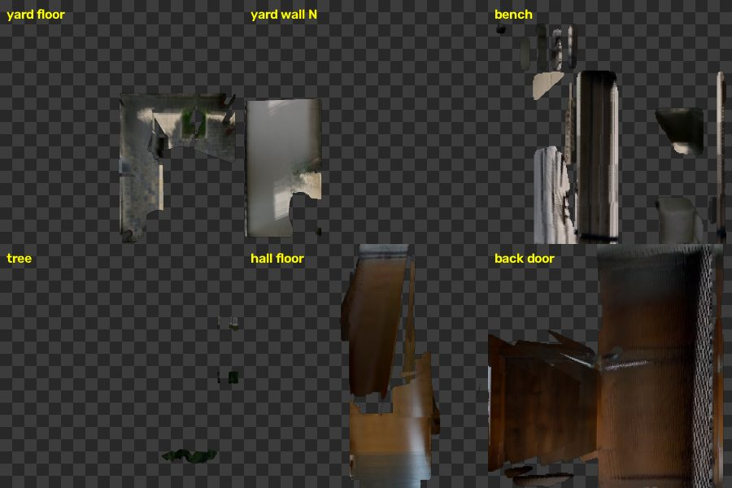
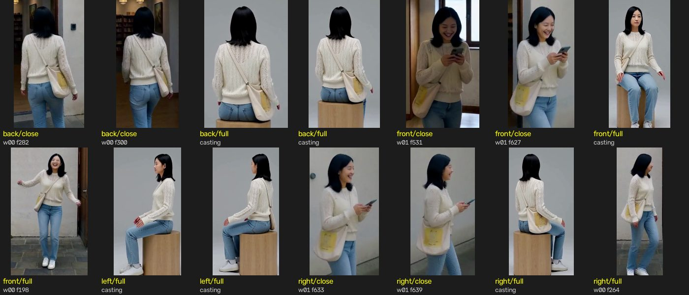
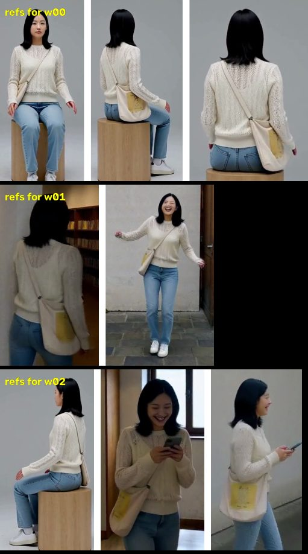
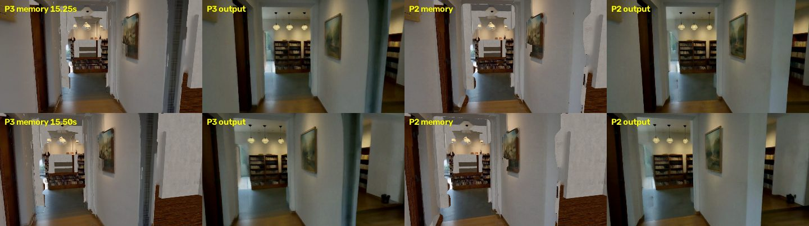
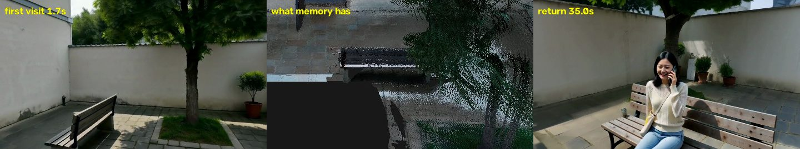

一句话：所有东西都存在一个"世界状态"里，包括 3D 白模、场景记忆、人物记忆、声音记忆。每一段视频的条件都从世界状态渲染出来；生成完，画出来的东西再登记回世界状态。不针对某个镜头单独调参数。
| # | 步骤 | 做什么 | 产出 |
|---|---|---|---|
| 0 | 规划 | 大模型把剧本补全，写成 3D 布局：6 个区域（街、店、工作间、走廊、厨房、后院）、墙、门窗、60 件物体的位置和尺寸。再写剧情节拍，包括人走的路线、相机路线、人什么时候停、转身、坐下 | scene.json、clips.json |
| 1 | 切段 | H3 一次最多生成约 15 秒。按剧情切成 3 段，相邻两段重叠 1.5 秒，交接放在镜头和人都不忙的时候 | 0–15.1 / 13.6–27.3 / 25.7–40 秒 |
| 2 | 白模渲染（Blender） | 逐帧渲染：场景深度；人的深度，分真人体（SMPL-X）和占位人形两种；带材质的白模（墙贴灰泥、屋里木地板、院子小方砖，CC0 照片材质）；每件物体在画面里占哪 | 每帧的深度、材质图、遮罩 |
| 3 | 写 prompt | 先从白模算事实：哪些东西看得见、门洞是方顶还是圆拱、镜头先对着什么、人第几秒进画面、每 2 秒的左右站位。大模型只负责把事实写成通顺的话；写完自动检查，提到看不见的东西、人提前出现、世界里没有的拱门都打回重写 | 每段一份 prompt |
| 4 | 人和动作的初始记忆 | 先生成角色原地转一圈的定妆视频，抠出来按朝向分格存。动作参考（街舞）用搭档的方法：参考视频恢复成 3D，从我们的机位渲染成灰模，再让 H3 生成一段动作参考视频 | 人物记忆初值、动作参考视频 |
| 5 | 生成一段（H3，8 步，4 卡） | 条件全部从世界状态来：深度、记忆颜色（分层，各层管不同的步数，见下一节）、人物参考图、音色、动作参考、prompt | 一段带声音的视频 |
| 6 | 登记回世界 | 场景：取约 60 张关键帧，估深度（DAv2）并对齐白模，人用 SAM3 抠掉，每个像素变成带颜色的 3D 点。和白模相差 8% 以内的点贴到白模表面上；其余的点只收落在某件规划物体范围里的；H3 自己加、在这一段反复出现、立在地上的一团，登记成新物体。 人：抠出来，按朝向（前、后、左、右）× 远近（全身、近景）分格存，先检查像不像本人，不像的不进；同时记下她实际被画在哪。 声音：语音识别找到她说的台词，切出来存成音色参考 | 场景点、人物格、台词音频、人的位置 |
| 7 | 下一段 | 回到第 5 步。人从上一段实际画到的位置开始，1.5 秒内回到规划路线；参考图按这一段会出现的角度从人物记忆里挑；音色用她说过的第一句 | |
| 8 | 拼接 | 在重叠段里找两段画面最像的那一帧，前后 9 帧渐变过去，声音也同样渐变 | 40 秒成片 |
H3 去噪共 8 步。前几步定布局和颜色，后几步画细节。记忆按可信程度分层，越可信的管得越久：
| 层 | 放什么 | 管几步 |
|---|---|---|
| 交接照抄 | 重叠段前 60% 的整帧画面（去掉人），直接用上一段自己画的 | 每一步 |
| 硬抄 | 贴在白模上、视角差 45° 以内、放大不到 1.6 倍的表面，作为 H3 的"补全"输入照抄；其他东西只在几乎同一视角时照抄 | 全程 |
| 地面 | 看过的地面 | 1–8 |
| 平墙 | 离任何看得见的门窗 0.4 米以外的墙，拉向带材质的白模 | 1–6 |
| 软约束 | 其余看过的地方 | 1–6 |
| 材质白模 | 还没看过的墙、地面、天花板 | 1–4 |
| 不约束 | 人、她要坐的长椅（整块按白模深度加人体）、没看过的物体 | — |






第一段里她说"太好了，我考上了！"。生成后用语音识别在 7.98–9.87 秒找到这句，切出来存成她的音色参考。第三段打电话时把它作为参考音频给 H3，两段是同一个声音。
动作记忆：只有开头那段街舞用了参考动作，走路、坐下由 H3 自己按 prompt 画。人的位置每段都记，用于交接。

那道条纹在工作间门洞的边上（门框侧面）。第一段只从走廊远处斜着看到过它，P3 的表面贴图把这一眼锁住了。所以问题不在交接，而是"第一眼就锁住"的时候，第一眼可能是糊的。长椅前的地面变大石板也是同一个原因：第一眼离得远、角度斜。软约束只拉前几步，H3 半听半不听，就出现半透明的鬼影，或者把地面重新理解成大石板。

两个原因叠在一起：① 第一段只从侧后方斜着看到过长椅，记忆里它是一块黑影（中间那张），本来就没有可抄的东西；② 早先的版本照抄记忆里的长椅，靠背被切成锯齿、画到了她身前，所以现在她要坐的长椅整块不约束，只给白模深度（一个方盒子）加人体。H3 只知道"这里有个长椅形状"，颜色和腿每次都按自己的想法画。
回头看所有出问题的地方，H3 自由发挥只发生在三种情况：
| 办法 | 具体做什么 | 管哪种情况 |
|---|---|---|
| ① 只记看清楚的 | 每个记忆点带一个清晰度：离得多近、看得多正。糊的不拿来约束（退回材质白模），等哪一段看清楚了再记，记下以后才锁住。约束要么可信、管到底，要么干脆不给；不再"拉一半" | 2：鬼影、地面变样 |
| ② 白模换真实模型 | 长椅、树、花盆、铺地换成写实的 CC0 模型和材质，按规划尺寸摆进去。没看过的地方也有可信的细节，深度里也有长椅真实的腿和靠背 | 1：没看过的地方、长椅 |
| ③ 人碰的东西只管颜色 | 长椅不抄像素（会切出锯齿），但把记忆里它的颜色（模糊后的）作为整段的弱约束，形状交给真实模型 | 1：长椅换颜色 |
| ④ 生成后检查 | 把输出和世界状态比：平墙上多了东西、记忆里清楚的地方画得不一样，就局部重画，至少不让它进记忆 | 兜底 |
建议顺序：先做 ①，改动小，只改记忆怎么挑点，应该能同时消掉第二段的鬼影和长椅前地面的变化；再做 ②③；④ 最后。
memory_run.py stories/yard_return_v6 --label P3 --devices 0,1,2,3
--prior 4 --prior-tex --prior-plain 6 # 材质白模：没看过的 1–4 步，平墙 1–6 步
--refs --char-bank --person-bank --seed-bank casting_seed/bank # 人物记忆 + 定妆视频
--motion-ref # 动作参考（搭档的方法）
--geom gen --anchor-full 10 # 记忆几何用生成画面估出的深度
--cue-take take_actors_smpl --cue-take2 take_boxact --body-steps 2 --actor-mask take_actors_smpl
# 真人体管 1–2 步，之后占位人形
--v4 --blend-steps 6 # 软约束 1–6 步
--snap 0.08 --plan-angle 45 # 差 8% 以内贴到白模；贴上的表面 45° 内硬抄
--handover --zone-objects # 她要坐的长椅整块不抄记忆
--volume-gate # 只记有着落的点；H3 加的东西登记成新物体
--floor-steps 8 # 地面 1–8 步
--hybrid-memory # 表面贴图（P3 新加）
--overlap-lock 0.6 # 交接：重叠段前 60% 每一步照抄
--person-writeback # 人从上一段实际位置接着走
--config minimax_h3_ref2av_control_union2_08steps_turbo_tp4_vaepar_msvg.json # 8 步 turbo，4 卡